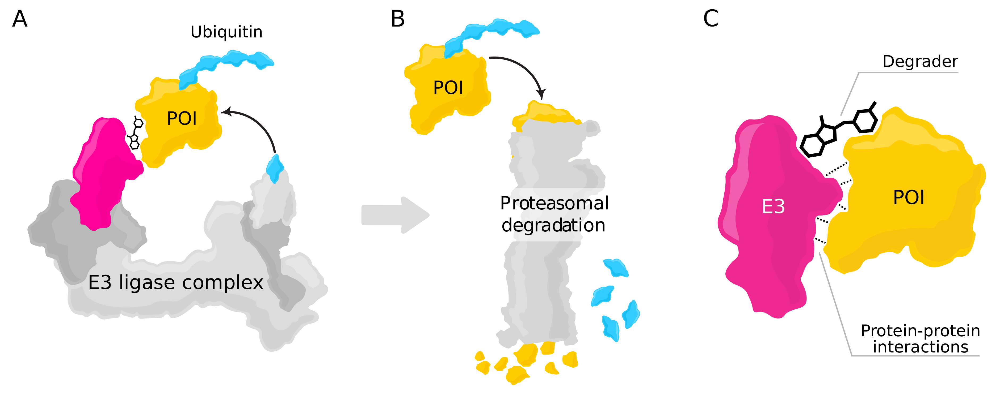

Protein–protein interaction prediction for targeted protein degradation 2022
International Journal of Molecular Sciences
project paper supplement
Expand bibtex
@InProceedings{IJMS2022,
author = {Oliver Orasch and Noah Weber and Michael Müller and Amir Amanzadi and Chiara Gasbarri and Christopher Trummer},
title = {Protein–protein interaction prediction for targeted protein degradation},
booktitle = {International Journal of Molecular Sciences},
year = {2022},
}